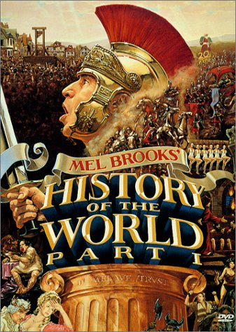

Previous Work

Procedural Attachments
- History stems from frame knowledge representation
- Implemented in a few ATP systems
- No general framework
Computer Algebra and Proof Assistants
ATP Based
- Mainly integrating relational databases
- A-boxes in DL systems, eg., InstanceStore
- Some FOL systems, e.g., Ontograte, RLS, IQRR
- Commonsense reasoning KBs e.g., Cyc, LarKC.
- Linkage to CA systems, e.g., DTP-MAGMA, Biodeducta
Weaknesses
- Typically single forms of external data
- Disparate protocols for ATP access
- Not SotA ATP